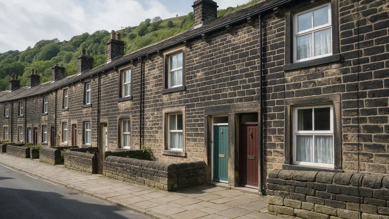

Sample coverage
Joinery in Hebden Bridge.
Internal doors and fire doors, staircases and banisters, fitted wardrobes and storage, skirting and architrave, timber window repairs and garden joinery in Hebden Bridge and round about. Hebden Bridge is a real place. Grainhurst Joinery is not a real firm, has no address there and has never worked there, because it has never worked anywhere.
What we get asked for in Hebden Bridge
Mostly the same handful of jobs as everywhere: doors that want hanging properly, a banister that looks like it belongs to another house, an alcove that could hold twice what it does, and timber at the bottom of a window or a door frame that has had enough. What changes from place to place is the houses, and in Hebden Bridge it tends to be tall stone houses on the valley sides, often an over and under with doors on two different levels, where nothing is square and nearly every job is scribed rather than measured.
None of that changes the method. Every opening still gets measured at the top, the middle and the bottom, the carcass still gets built square, and the difference between square and the actual wall still gets scribed out rather than filled. What it changes is how long the scribing takes compared with the making, which is exactly what we are judging when we come round.
What a visit looks like
Twenty minutes to half an hour. A tape across every opening in three places, a level on the floor and a plumb line on the walls, an awl into any timber that looks tired, and a look at what is behind the plaster where it matters. Then it goes in writing with what is included and what is not on separate lines.
A note on honesty
This is a demo page for a fictional firm, so there are no customer names, no addresses and no job histories on it, because inventing them would be inventing reviews. On a real site this is exactly where your own photographs from Hebden Bridge would go, with a line each about what the house turned out to need.

Generated photoGenerated for this demo. Not a photograph of Hebden Bridge.
 Generated photo
Generated photoScribing to the wall is most of the skill in an old stone house.
In Hebden Bridge
What we would come out for.
Internal doors and fire doors
Hung to the opening you have rather than the one the door was made for. Recesses cut by hand, gaps even all the way round, and it still shuts in August.
More →Staircases and banisters
New spindles and handrails, newel posts, and the creaks taken out of a flight that has been annoying somebody for years. Fitted so the whole thing feels solid under your hand.
More →Fitted wardrobes and storage
Built into the alcove you have, out of square walls and all. Scribed tight to the plaster, up to the ceiling, with no gap on top collecting boxes.
More →Skirting, architrave and flooring prep
Long runs scribed into corners rather than mitred and filled, architrave tight at the head, and floors made flat and quiet before anybody lays anything on them.
More →Sash and timber window repairs
Rotten sections spliced out and new timber let in, sash cords and weights sorted, and the whole thing working again without a plastic window going in.
More →Decking and garden joinery
Decks, gates, stores and screens, framed properly and set so water runs off rather than sits. Outside timber either drains or it rots, and the framing decides which.
More →Nearby
The other places on the list.
- TodmordenJoinery in Todmorden
- MytholmroydJoinery in Mytholmroyd
- RippondenJoinery in Ripponden
- RastrickJoinery in Rastrick
Sample coverage for this demo.
Something wants doing in Hebden Bridge?
Tell us what it is and your postcode and we will come and put a tape across it.